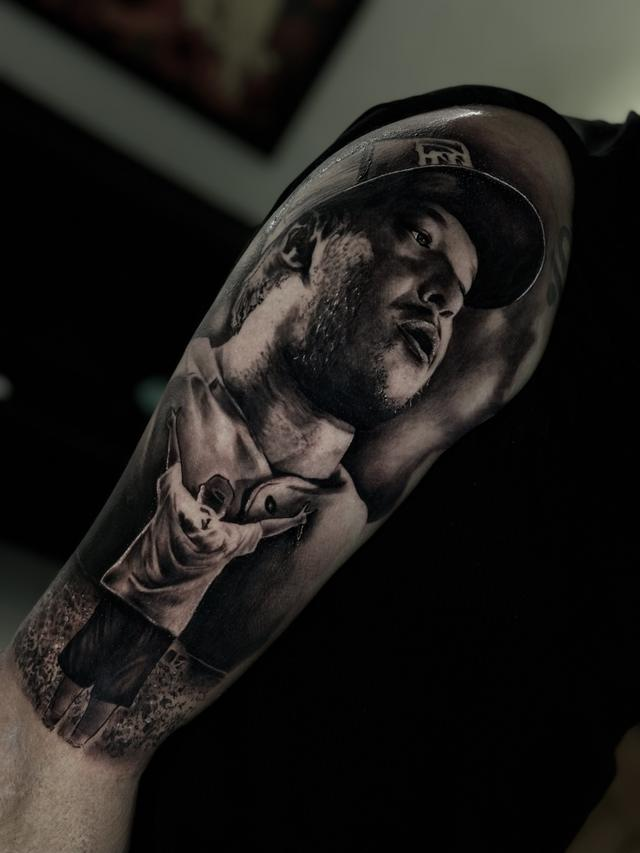
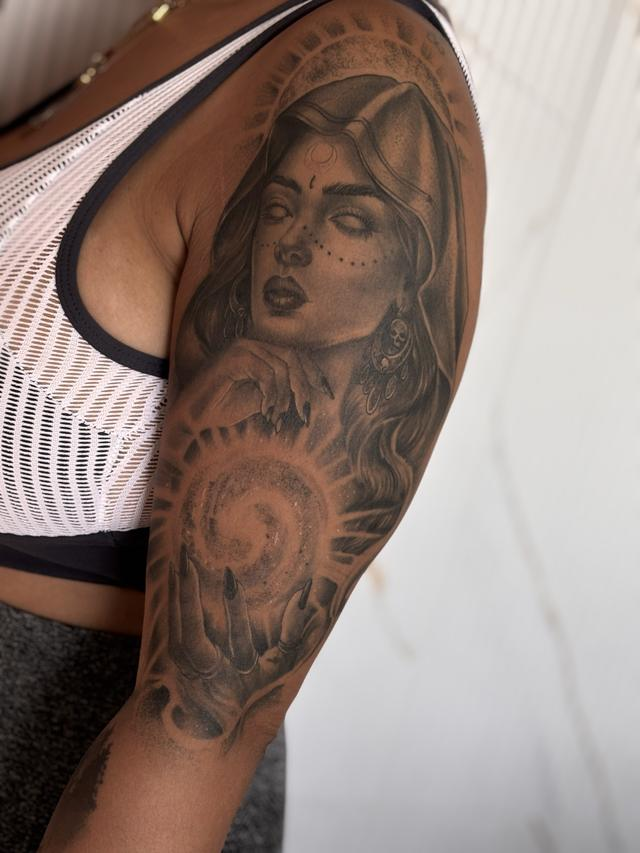
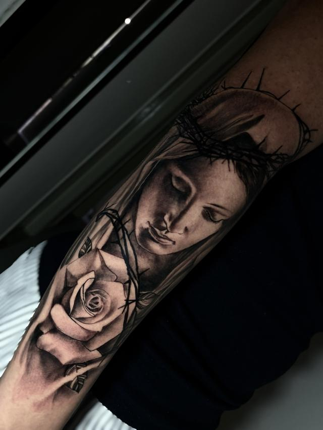

Região do corpo
Tatuagem no braço e no antebraço
O braço é a região mais pedida e a menos perdoada: fica à vista todos os dias e acompanha cada movimento. Por isso o desenho não sai de um catálogo — ele é construído em cima do seu braço, com a peça já na pele antes da agulha.
01 — A região
Do antebraço ao fechamento
Antebraço
Área mais plana e de leitura frontal: a peça é vista por quem está na sua frente e por você, de cima. É onde a primeira tattoo costuma começar, e onde um retrato de tamanho médio ainda cabe sem perder detalhe.
Braço interno
Pele mais fina e mais sensível, mas também a que menos pega sol — o preto se mantém fechado por mais tempo ali do que na parte de fora.
Ombro e deltoide
Superfície curva. O desenho tem que seguir o músculo, senão deforma quando o braço levanta. É aqui que a posição do stencil muda mais o resultado final.
Fechamento
Não é a soma de peças separadas: é um projeto só, que atravessa antebraço, braço e ombro com um fio condutor. Começa pela composição inteira, mesmo que a aplicação leve meses.
Se você já tem tatuagem no braço, o projeto novo precisa conversar com a antiga — às vezes cobrindo, às vezes incorporando. Mande foto da área com boa luz e eu digo o que é possível.
Peças
Braço e antebraço, peça por peça
Trabalhos reais, feitos no estúdio da Vila Matilde.




O acervo completo fica no portfólio, e os trabalhos mais recentes saem primeiro no Instagram @andretatuadoor.
02 — O caminho
Como um fechamento acontece
- A conversaVocê manda a ideia, as referências, a região exata e o tamanho que imagina. Eu pergunto o que falta e avalio o projeto.
- A data e o sinalEscolhemos o dia e o sinal reserva a sua data na agenda. Ele é abatido do valor da sessão.
- O desenhoDesenho depois da data marcada e você vê antes da sessão. Ajuste faz parte: mexemos no que for preciso antes de aplicar o stencil.
- A sessãoUm trabalho grande por dia, com hora marcada e pausa quando você pedir. Projeto grande é dividido em blocos que já fazem sentido sozinhos.
- A cicatrizaçãoVocê sai com os cuidados por escrito. Retoque, se for necessário, a partir de 40 dias.
Dúvidas
O que mais me perguntam
Quantas sessões leva um braço fechado?
Depende do tamanho, da densidade de preto e de como a sua pele responde — por isso eu não prometo número antes de ver o projeto. O que eu faço é dividir o fechamento em blocos que já ficam prontos sozinhos, para você nunca andar por aí com uma peça pela metade.
Dá para começar com uma peça pequena e fechar o braço depois?
Dá, e é o caminho mais comum. A diferença é avisar isso desde o começo: eu posiciono a primeira peça pensando no fechamento futuro, deixando respiro onde o projeto vai crescer. Sem isso, o fechamento depois vira remendo.
Preto e cinza desbota mais rápido no braço?
O que mais apaga cinza é sol, não a região. Braço é a parte do corpo que mais recebe sol no dia a dia: protetor depois de cicatrizado é o que mais preserva o contraste.
Dá para cobrir uma tatuagem antiga no braço?
Na maioria dos casos, sim. Mande uma foto da peça atual com boa luz: eu digo o que é possível esconder, se vale clarear antes e quais desenhos funcionam naquele formato.
Me conta a sua ideia
Manda a referência, a região do corpo e o tamanho que você imagina. Eu avalio o projeto e respondo pessoalmente.
Av. Melchert, 606 — Vila Matilde, São Paulo. Todos os dias, das 9h às 22h, somente com hora marcada. Atendimento para maiores de 18 anos.